«О любви, о нежности и грусти человеческой моё скромное творчество…»

1 апреля в фойе Киноконцертного зала состоялось вручение ежегодной литературной премии имени писателя-земляка Алексея Ивановича Шеметова. В этом году номинантом на премию стал поэт Борис Семенович Шипилов с его третьим недавно вышедшим поэтическим сборником «Ах Таруса, наряд твой зеленый…». Первым сборником поэта был «Грусть и Нежность» 1997 год, вторым - «Листопад» 1999 год. Сборник стихов «Ах Таруса, наряд твой зеленый…» представляет собой копилку образов ненаглядной Тарусы. День вручения премии стал не просто официальным мероприятиям, а встречей добрых друзей. Фойе зала мгновенно наполнилось людьми, желающими разделить радость с автором.
Борис Семенович Шипилов родился 10 мая 1942 года в городе Москве. Окончил среднюю школу. В 1959 году поступил на завод, работал токарем. В 1961 году был призван в ряды Вооруженных Сил. После демобилизации в 1964 году уехал на Дальний Восток, где работал докером, рыбаком, матросом. Четыре года спустя снова вернулся в Москву и стал работать шкипером-матросом в речном порту. В 1983 году с семьей переехал в Тарусу. Работал в совхозе пастухом до распада сельского хозяйства, а затем – в районном отделе культуры города Тарусы. Как говорил Борис Семенович: « Я искал Синюю птицу - цель Жизни, но не находил».
Стихотворные подборки Б.С. Шипилова печатались в журнале «Русич» (Обнинск, 1995 г.), в газетах «Знамя», «Весть», «Приокская правда», «Октябрь», в тарусском альманахе «Над тарусской росстанью…» (Калуга, 2011г.) где включена подборка стихов автора на военную тему, тему памяти, ставшей для него багажом, который «невозможно сдать на хранение в пункте пересадки, а квитанцию «нарочно забыть» на полустанке Жизни».
Борис Семенович Шипилов – лауреат и дипломант Областного фестиваля-конкурса «Летопись родного края» (2004 г.) за две песни композиторов Г.Хвощева и Г. Костюкевич на стихи Б.С.Шипилова – «Тарусская весна» и «Обелиск».
Таруса стала городом, в котором хотелось жить и творить. Древнерусский городок, в который он влюбился с первого знакомства, стал местом, дарящим вдохновение. Поэт-самородок, человек настолько влюбленный в Тарусу смог разглядеть в ней те скрытые черты, которые не замечали другие.
Городок уютный. Небольшой.
Летом теплый, а зимой студеный.
По-людски: то грустный, то смешной,
То усталый, то неугомонный.
Стихи Бориса Семеновича просты для восприятия. Берешь в руки сборник, открываешь любое стихотворение, начинаешь читать и чувствовать атмосферу, которую хотел передать автор, удается представить стайки стройных берез и теплоходик на речушке, медленно уплывающий вдаль по волнам. Сидишь и смотришь на берегу Оки на бескрайние просторы, невольно задумываюсь о том, как много еще не повидал. Скромность, таинственность родного уголка притягивает к себе и воодушевляет на новые путешествия и открытия. Проживая частичку жизни, которую раскрывает автор в своих стихах, становишься очевидцем пережитых им событий, окунаешься в пучину тех испытаний, которые ему преподнесла жизнь.
Многим близки раздумья и признания Бориса Семеновича. На вручение премии пришли люди, которые знают его не только как талантливого поэта, но и как искреннего, открытого, доброго человека. Виктор Анатольевич Иванов, тарусянин, автор-исполнитель собственных песен, отметил напевность и мягкость строк стихотворений Бориса Семеновича. Многие стихи из нового сборника автора легко ложатся на музыку. Виктор Анатольевич с теплотой исполнил пару песен на стихи Б.С. Шипилова, но это были не отрепетированные музыкальные номера, а импровизация, все присутствующие единодушно выбрали полюбившиеся всем стихотворения, а Виктор Анатольевич в считанные минуты придумал мелодию, которую он с легкостью начал наигрывать на гитаре.
Поздравил Бориса Семеновича и народный коллектив «Тарусские зори», подарили поэту памятный сувенир и открытку с надписью: «Просто хорошему человеку!». Народный коллектив знаком с поэтом очень давно, первые песни на его стихи стали исполняться «Тарусскими зорями» еще в 1995-96 годах. Первой песней была песня «О Тарусе», затем в репертуар коллектива вошли песни «Обелиск», «На селе поет гармошка». На вручении премии «Тарусские зори» исполнили песню на стихи Б.С. Шипилова «Над Окою туман». Все эти песни, не имеют срока давности, они будут ценны вечно, каждый находит в них что-то свое, столь близкое и знакомое.
По словам Бориса Семеновича, премия для него приятная неожиданность, но столько лет своей жизни он пишет стихи, не думая о том, какую премию за свои сборники он получит. Важно то, как читатель отнесется к его произведению, примет он его или нет.
Борис Семенович простой, скромный и открытый человек, пишущий для народа. Каждое его творение - это признание страстно влюбленного человека в родную столь милую ему Тарусу.
Поздравляем нашего земляка с заслуженной наградой! Желаем ему здоровья и новых вдохновенных строк!
Информация предоставлена редакцией районной газеты "Октябрь"

 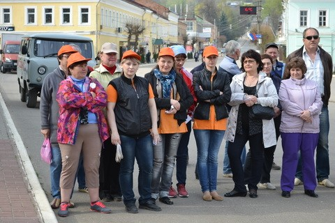
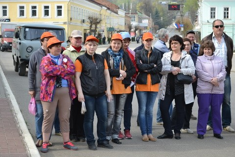
 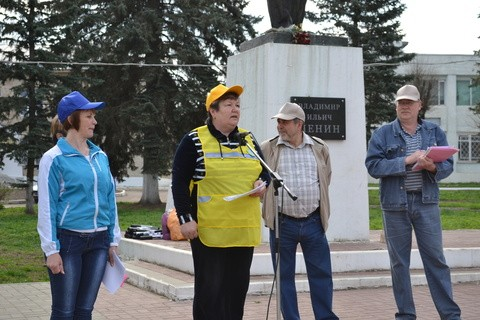
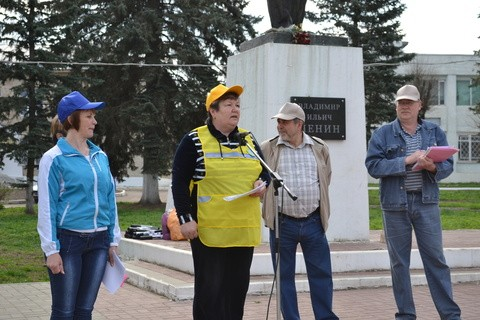


 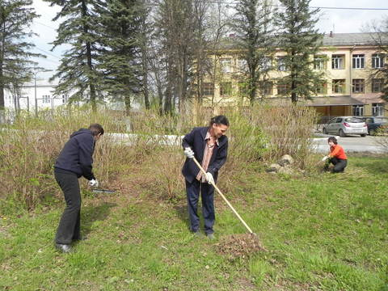
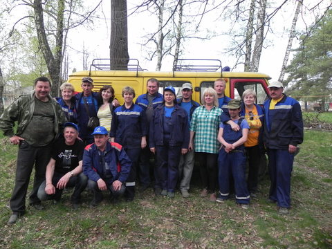
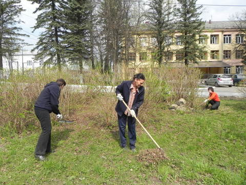
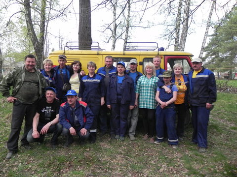
 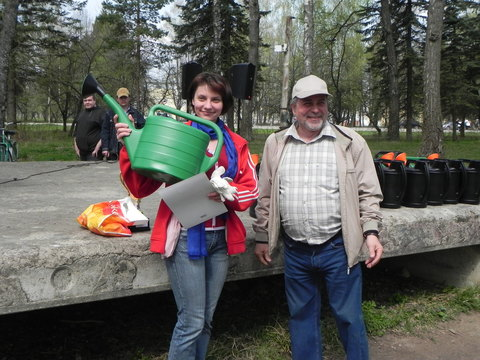
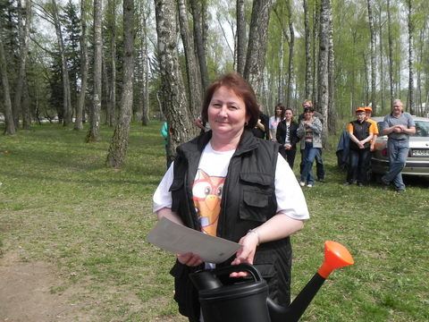
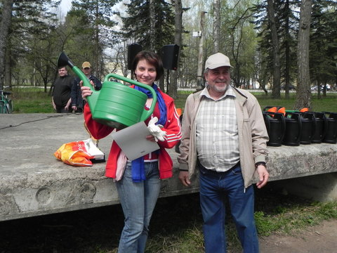
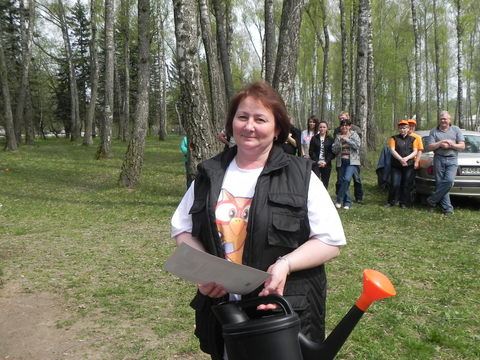


 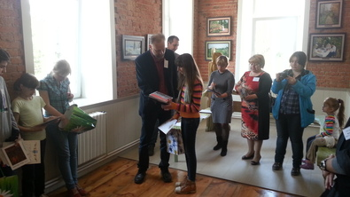
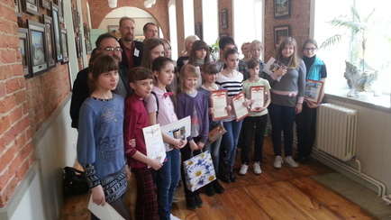
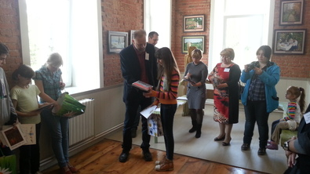
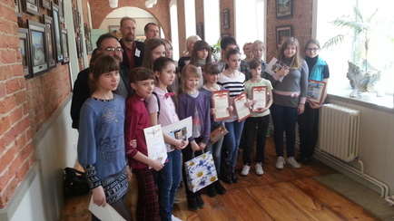


{kind=link}
{kind=link}
{kind=link}
{kind=link}
{kind=link}
{kind=link}
{kind=link}
{kind=link}
{kind=link}
{kind=link}
{kind=link}
{kind=link}
{kind=link}
{kind=link}
{kind=link}